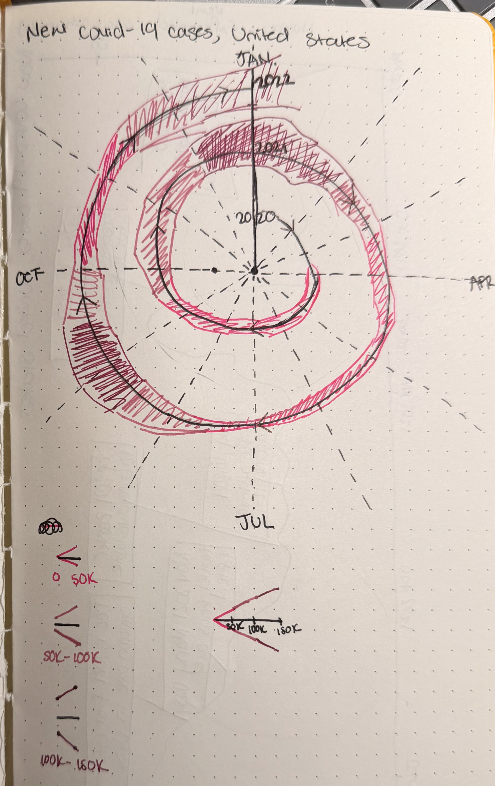
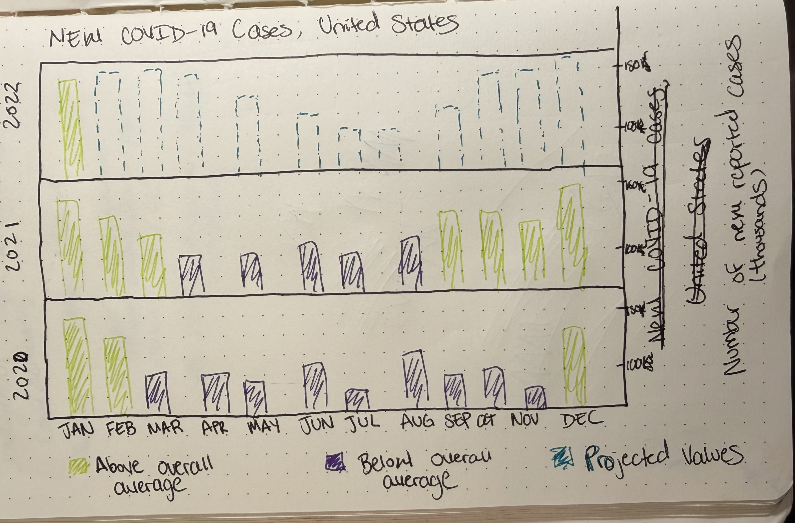
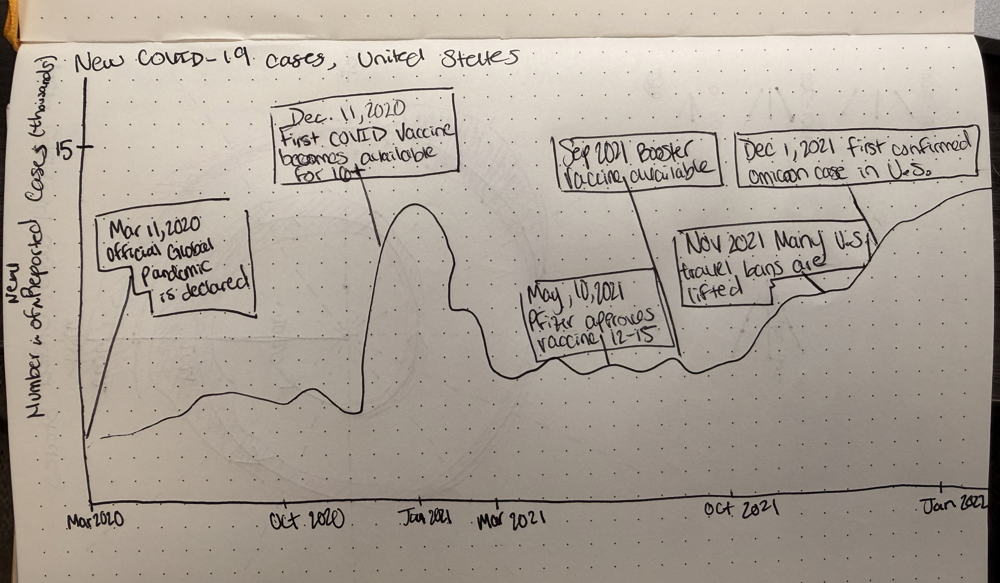

Reading & Critique

Insights about the data/visualization:
- There was a large peak was from December-January of 2021
- The minimum was around June-July of 2021
- January 2022 was the highest amount of cases
Design Critique:
The visualization above is a polar graph where the theta are months, the thickness of the red
areas are the number of cases, the angle shows the passage of time and waves represent general
trends. The graph does a good job of showing the fluctuations in the number of omicron cases
from Jan 2020 to Jan 2022 including peaks in reported cases; however, it trades numerical
accuracy for showing general trends. In context, this makes sense since the article uses this
graph to talk about past data and predictions for future spikes. For example, the article discusses
what the team sees for January 2022 and whether or not they predict hospitals will be further
strained than they were in January of 2021 with an additional projection graph, overall
communicating that the month of January is a heightened time for the omicron virus.
But as mentioned earlier, it is quite difficult to compare the differences in the number of cases in the graph
above.
The data is not necessarily hidden but not easily located, the top left corner depicts the thickness
of what 150k cases may look like but there are no labels on the graph that directly state how many cases that segment is representing.
The time from August 2021-October 2021 also shows an
increased number of cases but it is very difficult to compare to the peak Jan 2021 season. For the context of the article,
it makes sense to emphasize trend over values as a deliberate simplification backed
by elaboration done by the author in the article. As a standalone visualization, it could benefit from more
numerical labels in select timeframes, different colors for radiuses to distinguish years,
and an explanation for the values displayed in Jan 2022 (this article was published in early Jan 2022
so it’s a bit odd to see some data stretching beyond Jan 2022).
As for how the data visualization interacts with the audience, it does seem like a graph that could
be understood by the average New York Times reader. You begin from the center and follow the
line in a spiral manner but there is no explicit label marking the beginning. It does seem to take
more cognitive power than a traditional graph such as a line or bar graph so it may take a longer
time for people who are unfamiliar with different graph types to understand. There is appropriate
spacing with a generous amount of white space, clean typography, clear color contrast, and
minimal clutter, the arrow was a nice touch to show a clockwise direction. I will say that the 7-day
average label can be a bit confusing. I myself did not know what it meant at first but after thinking
about it longer, the graph plots 7-day averages rather than cases on a daily basis. I initially thought it was
pointing to point out a certain 7-day average in Jan 2021 that was especially high. It may be worth
adding a sentence description rather than a label in this case. Overall, this graph does a very good
job of sending a clear message that omicron has peak seasons, with another one that may be
underway, uses expressive geometry quite effectively, is clean and elegant. However trades these
qualities with loss of quantitative precision and ease of magnitude comparisons.
Visualization Sketches

Design Rationale for Sketch 1:
- I began with this spiral graph because I wanted to build off of the original visualization above. I decided to add the color buckets because an issue with the original graph was that it was hard to differentiate the volume of cases and compare the different points of time to one another. This creates more of a visual difference marked by 3 different shades of the same color.
- I chose different shades of pink for the buckets firstly because I had 3 different shades of pink pens but secondly because I wanted the colors to be similar to each other. I considered using yellow, green, and blue for the buckets but decided the colors were too distinct and would disrupt the continuity that the spiral brings.
- I added more arrows pointing clockwise around the spiral so that it would be more clear in what direction the graph is meant to be read. Although I did not add a starting point in the center anyone can easily follow the arrows backwards to the origin.

Design Rationale for Sketch 2:
- This stacked bar graph was also meant to show the passage of time and fluctuations with new COVID-19 cases. Having them vertically on top of one another makes yearly comparisons easy while you can still observe changes by the month. It is easier to see the numeric value of each month as well. I didn't apply this to a regular stacked bar graph because there are distinct years and color buckets that would disrupt the chronological flow of the values. In other words if these bars were overlapping or merged into one line of bars then I would somehow have to differentiate between the years adding another level of complexity that could make the graph harder to read.
- I decided to include the different colors for months that were above or below the overall average to make comparisons even easier. Both numeric and ease of comparison were issues in the original graph so this one focuses on those two qualities the most. You would very much be able to see the peaks and lows of the number of cases.
- As I stated above, this graph focuses on comparisons and number accuracy. However, it is more complicated than the spiral one above. As a standalone graph this has more information but may be harder to read.

Design Rationale for Sketch 3:
- A line graph is one of the most traditional methods to showcase fluctuations overtime. It clearly shows maximums and minimums while the line connection keeps the continuous flow of data.
- This graph would also be a timeline that includes notable developments in COVID-19 and events that could affect the number of new cases. This type of graph is good for story telling and possibly explaining the fluctuations in cases and it recaps areas that are still relevant to the article.
- This graph has more of a narrative than the graphs above. However, this graph also sacrifices some of the numerical accuracy and focuses more on trends and fluctuations. It displays more of an overall story or recap of COVID-19's story. However, it would add more context to the author's argument. If the article were stating that because of the nature of the omnicron variant and decreased quarantine restrictions this may be why January 2022 could be the worst month of new COVID cases ever then this graph would add further context on the author's fears.
Final Visualization Design
Final Writeup
DESCRIBE YOUR RATIONALE TO JUSTIFY THE DECISIONS FOR YOUR FINAL DESIGN. WHAT ARE YOU TRYING TO CONVEY, AND HOW DOES YOUR DESIGN FACILITATE THIS?
REFLECT ON HOW YOUR FINAL DESIGN DOES OR DOES NOT ADDRESS YOUR ORIGINAL CRITIQUE. WHAT TENSIONS OR TRADEOFFS DID YOU ENCOUNTER? WHAT DID NOT WORK OUT AS ANTICIPATED?